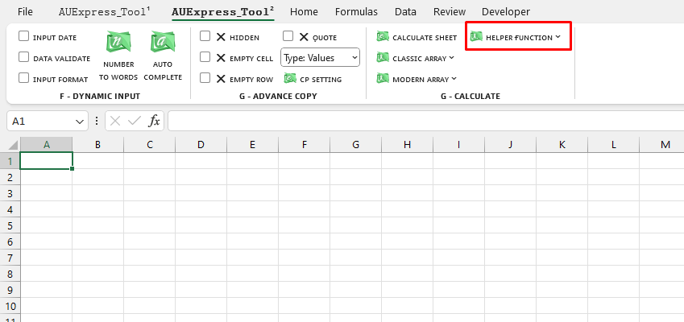

VD1: phân tách dữ liệu cột được ngăn cách bởi dấu "."

Chú ý: Để sử dụng hàm, bạn cần sử dụng LAMBDA helper functions của AUExpress_Tools.
Related function
INCREASE.ADJ Đánh số thứ tự tăng dần theo từng phân nhóm và từng phần tử trong phân nhóm đó.
COLOR Trả về mã màu sắc của ô chỉ định.
Return to Home